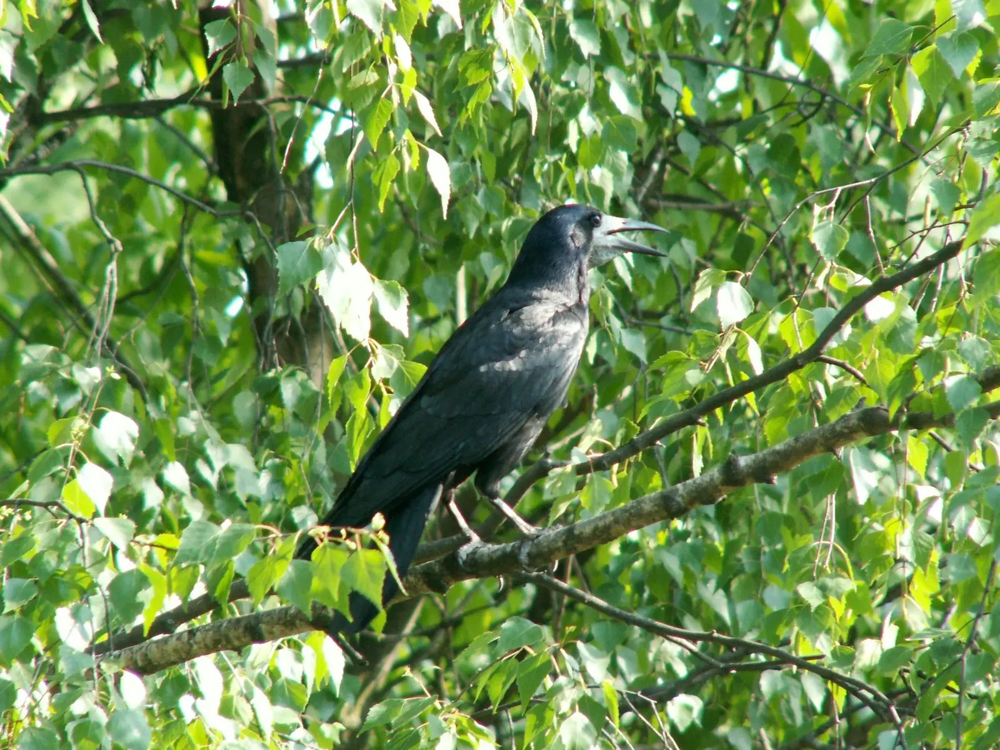

Fågelguide och fältdagbok
Känn igen fågeln. Bevara stunden.
en ny fågel varje dag, här och i appen
Dagens fågel · ons 7 okt
Pl. 280
Råka
Corvus frugilegus
Rapporteras året runt. Andelen av alla fågelrapporter är högst i Skåne, Halland och Gotland.
JFMAMJJASOND
Foto: Monedula · public domain
Rikta kameran, välj ett foto eller låt fågeln sjunga. Birdy föreslår arten direkt i telefonen, och du sparar fyndet i din egen fältdagbok.

samma fågel i appen i dag